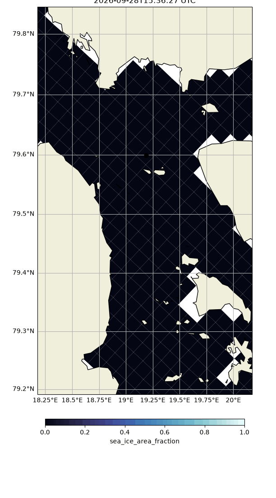
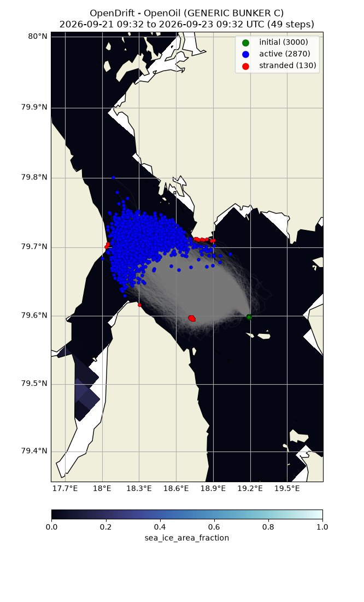

Note
Go to the end to download the full example code.
Oil in ice
15:36:27 INFO opendrift:569: OpenDriftSimulation initialised (version 1.14.11 / v1.14.12-32-g22db1c0)
Using live data from Barents 2.5 km ocean model
o.add_readers_from_list(['https://thredds.met.no/thredds/dodsC/fou-hi/barents_eps_zdepth_be'])
Adjusting some configuration
o.set_config('processes:dispersion', False)
o.set_config('processes:evaporation', False)
o.set_config('processes:emulsification', False)
o.set_config('environment:constant:horizontal_diffusivity', 10)
o.set_config('drift:truncate_ocean_model_below_m', 3)
Imaginary oil spill in Hinlopen strait
o.seed_elements(lon=19.1909, lat=79.5986, radius=50,
number=3000, time=datetime.now() - timedelta(days=7))
15:36:27 INFO opendrift.models.openoil.openoil:1720: Oil type not specified, using default: GENERIC BUNKER C
15:36:27 INFO opendrift.models.openoil.adios.dirjs:86: Querying ADIOS database for oil: GENERIC BUNKER C
15:36:27 INFO opendrift.models.openoil.openoil:1731: Using density 988.1 and viscosity 0.021692333877975332 of oiltype GENERIC BUNKER C
15:36:27 INFO opendrift.models.basemodel.environment:203: Adding a global landmask from GSHHG
15:36:33 INFO opendrift.models.basemodel.environment:227: Fallback values will be used for the following variables which have no readers:
15:36:33 INFO opendrift.models.basemodel.environment:230: sea_surface_height: 0.000000
15:36:33 INFO opendrift.models.basemodel.environment:230: upward_sea_water_velocity: 0.000000
15:36:33 INFO opendrift.models.basemodel.environment:230: sea_surface_wave_significant_height: 0.000000
15:36:33 INFO opendrift.models.basemodel.environment:230: sea_surface_wave_stokes_drift_x_velocity: 0.000000
15:36:33 INFO opendrift.models.basemodel.environment:230: sea_surface_wave_stokes_drift_y_velocity: 0.000000
15:36:33 INFO opendrift.models.basemodel.environment:230: sea_surface_wave_period_at_variance_spectral_density_maximum: 0.000000
15:36:33 INFO opendrift.models.basemodel.environment:230: sea_surface_wave_mean_period_from_variance_spectral_density_second_frequency_moment: 0.000000
15:36:33 INFO opendrift.models.basemodel.environment:230: sea_ice_area_fraction: 0.000000
15:36:33 INFO opendrift.models.basemodel.environment:230: sea_ice_x_velocity: 0.000000
15:36:33 INFO opendrift.models.basemodel.environment:230: sea_ice_y_velocity: 0.000000
15:36:33 INFO opendrift.models.basemodel.environment:230: sea_water_temperature: 10.000000
15:36:33 INFO opendrift.models.basemodel.environment:230: sea_water_salinity: 34.000000
15:36:33 INFO opendrift.models.basemodel.environment:230: sea_floor_depth_below_sea_level: 10000.000000
15:36:33 INFO opendrift.models.basemodel.environment:230: ocean_vertical_diffusivity: 0.020000
15:36:33 INFO opendrift.models.basemodel.environment:230: ocean_mixed_layer_thickness: 50.000000
Running model
o.run(duration=timedelta(hours=48), time_step=1800, time_step_output=3600)
15:36:33 INFO opendrift:1910: Skipping environment variable upward_sea_water_velocity because of condition ['drift:vertical_advection', 'is', False]
15:36:33 INFO opendrift:1921: Storing previous values of element property lon because of condition (('general:coastline_action', 'in', ['stranding', 'previous']), 'or', ('general:seafloor_action', 'in', ['previous']))
15:36:33 INFO opendrift:1921: Storing previous values of element property lat because of condition (('general:coastline_action', 'in', ['stranding', 'previous']), 'or', ('general:seafloor_action', 'in', ['previous']))
15:36:33 INFO opendrift:958: Using existing reader for land_binary_mask to move elements to ocean
15:36:33 INFO opendrift:989: All points are in ocean
15:36:33 INFO opendrift.models.openoil.openoil:697: Oil-water surface tension is 0.035935 Nm
15:36:33 INFO opendrift.models.openoil.openoil:710: Max water fraction not available for GENERIC BUNKER C, using default
15:36:33 INFO opendrift:2237: 2026-09-28 15:36:27.064652 - step 1 of 96 - 3000 active elements (0 deactivated)
15:36:33 INFO opendrift.readers:67: Opening file with xr.open_dataset
15:36:35 INFO opendrift.readers.reader_netCDF_CF_generic:340: Detected dimensions: {'x': 'X', 'y': 'Y', 'z': 'depth', 'time': 'time'}
15:36:35 INFO opendrift.readers.basereader:175: Variable x_sea_water_velocity will be rotated from eastward_sea_water_velocity
15:36:35 INFO opendrift.readers.basereader:175: Variable y_sea_water_velocity will be rotated from northward_sea_water_velocity
15:36:36 WARNING opendrift.readers.basereader.variables:660: Invalid values (-0.004626641 to -0.0008346351) found for ocean_vertical_diffusivity, replacing with NaN
15:36:36 WARNING opendrift.readers.basereader.variables:663: (allowed range: [0, 1])
15:36:38 WARNING opendrift.readers.basereader.variables:660: Invalid values (-0.0013212361 to -2.9143215e-05) found for ocean_vertical_diffusivity, replacing with NaN
15:36:38 WARNING opendrift.readers.basereader.variables:663: (allowed range: [0, 1])
15:36:38 WARNING opendrift.readers.interpolation.interpolators:118: Only NaNs input to linearNDFast - returning
15:36:38 WARNING opendrift.readers.interpolation.interpolators:118: Only NaNs input to linearNDFast - returning
15:36:38 INFO opendrift:2237: 2026-09-28 16:06:27.064652 - step 2 of 96 - 3000 active elements (0 deactivated)
15:36:40 WARNING opendrift.readers.interpolation.interpolators:118: Only NaNs input to linearNDFast - returning
15:36:40 INFO opendrift:2237: 2026-09-28 16:36:27.064652 - step 3 of 96 - 3000 active elements (0 deactivated)
15:36:40 WARNING opendrift.readers.interpolation.interpolators:118: Only NaNs input to linearNDFast - returning
15:36:40 INFO opendrift:2237: 2026-09-28 17:06:27.064652 - step 4 of 96 - 3000 active elements (0 deactivated)
15:36:42 WARNING opendrift.readers.basereader.variables:660: Invalid values (-0.0013024728 to -1.5918426e-05) found for ocean_vertical_diffusivity, replacing with NaN
15:36:42 WARNING opendrift.readers.basereader.variables:663: (allowed range: [0, 1])
15:36:42 INFO opendrift:2237: 2026-09-28 17:36:27.064652 - step 5 of 96 - 3000 active elements (0 deactivated)
15:36:42 INFO opendrift:2237: 2026-09-28 18:06:27.064652 - step 6 of 96 - 2998 active elements (2 deactivated)
15:36:44 WARNING opendrift.readers.basereader.variables:660: Invalid values (-0.0041281697 to -0.0005663188) found for ocean_vertical_diffusivity, replacing with NaN
15:36:44 WARNING opendrift.readers.basereader.variables:663: (allowed range: [0, 1])
15:36:44 WARNING opendrift.readers.interpolation.interpolators:118: Only NaNs input to linearNDFast - returning
15:36:44 INFO opendrift:2237: 2026-09-28 18:36:27.064652 - step 7 of 96 - 2992 active elements (8 deactivated)
15:36:44 WARNING opendrift.readers.interpolation.interpolators:118: Only NaNs input to linearNDFast - returning
15:36:44 INFO opendrift:2237: 2026-09-28 19:06:27.064652 - step 8 of 96 - 2983 active elements (17 deactivated)
15:36:46 WARNING opendrift.readers.basereader.variables:660: Invalid values (-0.0040557776 to -0.0013311687) found for ocean_vertical_diffusivity, replacing with NaN
15:36:46 WARNING opendrift.readers.basereader.variables:663: (allowed range: [0, 1])
15:36:46 WARNING opendrift.readers.interpolation.interpolators:118: Only NaNs input to linearNDFast - returning
15:36:46 WARNING opendrift.readers.interpolation.interpolators:118: Only NaNs input to linearNDFast - returning
15:36:46 INFO opendrift:2237: 2026-09-28 19:36:27.064652 - step 9 of 96 - 2983 active elements (17 deactivated)
15:36:46 WARNING opendrift.readers.interpolation.interpolators:118: Only NaNs input to linearNDFast - returning
15:36:46 WARNING opendrift.readers.interpolation.interpolators:118: Only NaNs input to linearNDFast - returning
15:36:46 INFO opendrift:2237: 2026-09-28 20:06:27.064652 - step 10 of 96 - 2983 active elements (17 deactivated)
15:36:49 WARNING opendrift.readers.basereader.variables:660: Invalid values (-0.0062416513 to -0.0015993095) found for ocean_vertical_diffusivity, replacing with NaN
15:36:49 WARNING opendrift.readers.basereader.variables:663: (allowed range: [0, 1])
15:36:49 WARNING opendrift.readers.interpolation.interpolators:118: Only NaNs input to linearNDFast - returning
15:36:49 WARNING opendrift.readers.interpolation.interpolators:118: Only NaNs input to linearNDFast - returning
15:36:49 INFO opendrift:2237: 2026-09-28 20:36:27.064652 - step 11 of 96 - 2983 active elements (17 deactivated)
15:36:49 WARNING opendrift.readers.interpolation.interpolators:118: Only NaNs input to linearNDFast - returning
15:36:49 WARNING opendrift.readers.interpolation.interpolators:118: Only NaNs input to linearNDFast - returning
15:36:49 INFO opendrift:2237: 2026-09-28 21:06:27.064652 - step 12 of 96 - 2983 active elements (17 deactivated)
15:36:51 WARNING opendrift.readers.basereader.variables:660: Invalid values (-0.0062143244 to -0.0011027599) found for ocean_vertical_diffusivity, replacing with NaN
15:36:51 WARNING opendrift.readers.basereader.variables:663: (allowed range: [0, 1])
15:36:51 WARNING opendrift.readers.interpolation.interpolators:118: Only NaNs input to linearNDFast - returning
15:36:51 WARNING opendrift.readers.interpolation.interpolators:118: Only NaNs input to linearNDFast - returning
15:36:51 INFO opendrift:2237: 2026-09-28 21:36:27.064652 - step 13 of 96 - 2983 active elements (17 deactivated)
15:36:51 WARNING opendrift.readers.interpolation.interpolators:118: Only NaNs input to linearNDFast - returning
15:36:51 WARNING opendrift.readers.interpolation.interpolators:118: Only NaNs input to linearNDFast - returning
15:36:51 INFO opendrift:2237: 2026-09-28 22:06:27.064652 - step 14 of 96 - 2983 active elements (17 deactivated)
15:36:53 WARNING opendrift.readers.basereader.variables:660: Invalid values (-0.0065603764 to -0.0010057949) found for ocean_vertical_diffusivity, replacing with NaN
15:36:53 WARNING opendrift.readers.basereader.variables:663: (allowed range: [0, 1])
15:36:53 WARNING opendrift.readers.interpolation.interpolators:118: Only NaNs input to linearNDFast - returning
15:36:53 WARNING opendrift.readers.interpolation.interpolators:118: Only NaNs input to linearNDFast - returning
15:36:53 INFO opendrift:2237: 2026-09-28 22:36:27.064652 - step 15 of 96 - 2983 active elements (17 deactivated)
15:36:53 WARNING opendrift.readers.interpolation.interpolators:118: Only NaNs input to linearNDFast - returning
15:36:53 WARNING opendrift.readers.interpolation.interpolators:118: Only NaNs input to linearNDFast - returning
15:36:53 INFO opendrift:2237: 2026-09-28 23:06:27.064652 - step 16 of 96 - 2983 active elements (17 deactivated)
15:36:55 WARNING opendrift.readers.basereader.variables:660: Invalid values (-0.0032145928 to -0.00097629847) found for ocean_vertical_diffusivity, replacing with NaN
15:36:55 WARNING opendrift.readers.basereader.variables:663: (allowed range: [0, 1])
15:36:55 WARNING opendrift.readers.interpolation.interpolators:118: Only NaNs input to linearNDFast - returning
15:36:55 WARNING opendrift.readers.interpolation.interpolators:118: Only NaNs input to linearNDFast - returning
15:36:55 INFO opendrift:2237: 2026-09-28 23:36:27.064652 - step 17 of 96 - 2983 active elements (17 deactivated)
15:36:55 WARNING opendrift.readers.interpolation.interpolators:118: Only NaNs input to linearNDFast - returning
15:36:55 WARNING opendrift.readers.interpolation.interpolators:118: Only NaNs input to linearNDFast - returning
15:36:55 INFO opendrift:2237: 2026-09-29 00:06:27.064652 - step 18 of 96 - 2983 active elements (17 deactivated)
15:36:56 WARNING opendrift.readers.basereader.variables:660: Invalid values (-0.0040910146 to -0.00046879935) found for ocean_vertical_diffusivity, replacing with NaN
15:36:56 WARNING opendrift.readers.basereader.variables:663: (allowed range: [0, 1])
15:36:56 WARNING opendrift.readers.interpolation.interpolators:118: Only NaNs input to linearNDFast - returning
15:36:57 WARNING opendrift.readers.interpolation.interpolators:118: Only NaNs input to linearNDFast - returning
15:36:57 INFO opendrift:2237: 2026-09-29 00:36:27.064652 - step 19 of 96 - 2983 active elements (17 deactivated)
15:36:57 WARNING opendrift.readers.interpolation.interpolators:118: Only NaNs input to linearNDFast - returning
15:36:57 WARNING opendrift.readers.interpolation.interpolators:118: Only NaNs input to linearNDFast - returning
15:36:57 INFO opendrift:2237: 2026-09-29 01:06:27.064652 - step 20 of 96 - 2983 active elements (17 deactivated)
15:36:58 WARNING opendrift.readers.basereader.variables:660: Invalid values (-0.0036701001 to -0.00041647046) found for ocean_vertical_diffusivity, replacing with NaN
15:36:58 WARNING opendrift.readers.basereader.variables:663: (allowed range: [0, 1])
15:36:58 WARNING opendrift.readers.interpolation.interpolators:118: Only NaNs input to linearNDFast - returning
15:36:58 WARNING opendrift.readers.interpolation.interpolators:118: Only NaNs input to linearNDFast - returning
15:36:59 INFO opendrift:2237: 2026-09-29 01:36:27.064652 - step 21 of 96 - 2983 active elements (17 deactivated)
15:36:59 WARNING opendrift.readers.interpolation.interpolators:118: Only NaNs input to linearNDFast - returning
15:36:59 WARNING opendrift.readers.interpolation.interpolators:118: Only NaNs input to linearNDFast - returning
15:36:59 INFO opendrift:2237: 2026-09-29 02:06:27.064652 - step 22 of 96 - 2983 active elements (17 deactivated)
15:37:00 WARNING opendrift.readers.basereader.variables:660: Invalid values (-0.002955305 to -0.00027978115) found for ocean_vertical_diffusivity, replacing with NaN
15:37:00 WARNING opendrift.readers.basereader.variables:663: (allowed range: [0, 1])
15:37:00 WARNING opendrift.readers.interpolation.interpolators:118: Only NaNs input to linearNDFast - returning
15:37:00 WARNING opendrift.readers.interpolation.interpolators:118: Only NaNs input to linearNDFast - returning
15:37:00 INFO opendrift:2237: 2026-09-29 02:36:27.064652 - step 23 of 96 - 2983 active elements (17 deactivated)
15:37:00 WARNING opendrift.readers.interpolation.interpolators:118: Only NaNs input to linearNDFast - returning
15:37:00 WARNING opendrift.readers.interpolation.interpolators:118: Only NaNs input to linearNDFast - returning
15:37:01 INFO opendrift:2237: 2026-09-29 03:06:27.064652 - step 24 of 96 - 2983 active elements (17 deactivated)
15:37:02 WARNING opendrift.readers.basereader.variables:660: Invalid values (-0.0012282251 to -4.4843955e-06) found for ocean_vertical_diffusivity, replacing with NaN
15:37:02 WARNING opendrift.readers.basereader.variables:663: (allowed range: [0, 1])
15:37:02 WARNING opendrift.readers.interpolation.interpolators:118: Only NaNs input to linearNDFast - returning
15:37:02 INFO opendrift:2237: 2026-09-29 03:36:27.064652 - step 25 of 96 - 2983 active elements (17 deactivated)
15:37:02 WARNING opendrift.readers.interpolation.interpolators:118: Only NaNs input to linearNDFast - returning
15:37:03 INFO opendrift:2237: 2026-09-29 04:06:27.064652 - step 26 of 96 - 2983 active elements (17 deactivated)
15:37:04 INFO opendrift:2237: 2026-09-29 04:36:27.064652 - step 27 of 96 - 2983 active elements (17 deactivated)
15:37:04 INFO opendrift:2237: 2026-09-29 05:06:27.064652 - step 28 of 96 - 2983 active elements (17 deactivated)
15:37:06 WARNING opendrift.readers.basereader.variables:660: Invalid values (-0.00029654286 to -7.671233e-06) found for ocean_vertical_diffusivity, replacing with NaN
15:37:06 WARNING opendrift.readers.basereader.variables:663: (allowed range: [0, 1])
15:37:06 INFO opendrift:2237: 2026-09-29 05:36:27.064652 - step 29 of 96 - 2983 active elements (17 deactivated)
15:37:06 INFO opendrift:2237: 2026-09-29 06:06:27.064652 - step 30 of 96 - 2983 active elements (17 deactivated)
15:37:08 WARNING opendrift.readers.basereader.variables:660: Invalid values (-0.007942783 to -0.0004245968) found for ocean_vertical_diffusivity, replacing with NaN
15:37:08 WARNING opendrift.readers.basereader.variables:663: (allowed range: [0, 1])
15:37:08 WARNING opendrift.readers.interpolation.interpolators:118: Only NaNs input to linearNDFast - returning
15:37:08 INFO opendrift:2237: 2026-09-29 06:36:27.064652 - step 31 of 96 - 2983 active elements (17 deactivated)
15:37:08 WARNING opendrift.readers.interpolation.interpolators:118: Only NaNs input to linearNDFast - returning
15:37:09 INFO opendrift:2237: 2026-09-29 07:06:27.064652 - step 32 of 96 - 2983 active elements (17 deactivated)
15:37:10 WARNING opendrift.readers.basereader.variables:660: Invalid values (-0.017713364 to -0.0015669635) found for ocean_vertical_diffusivity, replacing with NaN
15:37:10 WARNING opendrift.readers.basereader.variables:663: (allowed range: [0, 1])
15:37:10 WARNING opendrift.readers.interpolation.interpolators:118: Only NaNs input to linearNDFast - returning
15:37:10 WARNING opendrift.readers.interpolation.interpolators:118: Only NaNs input to linearNDFast - returning
15:37:10 INFO opendrift:2237: 2026-09-29 07:36:27.064652 - step 33 of 96 - 2983 active elements (17 deactivated)
15:37:10 WARNING opendrift.readers.interpolation.interpolators:118: Only NaNs input to linearNDFast - returning
15:37:10 WARNING opendrift.readers.interpolation.interpolators:118: Only NaNs input to linearNDFast - returning
15:37:11 INFO opendrift:2237: 2026-09-29 08:06:27.064652 - step 34 of 96 - 2983 active elements (17 deactivated)
15:37:12 WARNING opendrift.readers.basereader.variables:660: Invalid values (-0.01878558 to -0.0037337749) found for ocean_vertical_diffusivity, replacing with NaN
15:37:12 WARNING opendrift.readers.basereader.variables:663: (allowed range: [0, 1])
15:37:12 WARNING opendrift.readers.interpolation.interpolators:118: Only NaNs input to linearNDFast - returning
15:37:12 WARNING opendrift.readers.interpolation.interpolators:118: Only NaNs input to linearNDFast - returning
15:37:12 INFO opendrift:2237: 2026-09-29 08:36:27.064652 - step 35 of 96 - 2983 active elements (17 deactivated)
15:37:12 WARNING opendrift.readers.interpolation.interpolators:118: Only NaNs input to linearNDFast - returning
15:37:12 WARNING opendrift.readers.interpolation.interpolators:118: Only NaNs input to linearNDFast - returning
15:37:13 INFO opendrift:2237: 2026-09-29 09:06:27.064652 - step 36 of 96 - 2982 active elements (18 deactivated)
15:37:14 WARNING opendrift.readers.basereader.variables:660: Invalid values (-0.023472173 to -0.005387252) found for ocean_vertical_diffusivity, replacing with NaN
15:37:14 WARNING opendrift.readers.basereader.variables:663: (allowed range: [0, 1])
15:37:14 WARNING opendrift.readers.interpolation.interpolators:118: Only NaNs input to linearNDFast - returning
15:37:14 WARNING opendrift.readers.interpolation.interpolators:118: Only NaNs input to linearNDFast - returning
15:37:14 INFO opendrift:2237: 2026-09-29 09:36:27.064652 - step 37 of 96 - 2980 active elements (20 deactivated)
15:37:14 WARNING opendrift.readers.interpolation.interpolators:118: Only NaNs input to linearNDFast - returning
15:37:14 WARNING opendrift.readers.interpolation.interpolators:118: Only NaNs input to linearNDFast - returning
15:37:15 INFO opendrift:2237: 2026-09-29 10:06:27.064652 - step 38 of 96 - 2974 active elements (26 deactivated)
15:37:16 WARNING opendrift.readers.basereader.variables:660: Invalid values (-0.023231104 to -0.008322898) found for ocean_vertical_diffusivity, replacing with NaN
15:37:16 WARNING opendrift.readers.basereader.variables:663: (allowed range: [0, 1])
15:37:16 WARNING opendrift.readers.interpolation.interpolators:118: Only NaNs input to linearNDFast - returning
15:37:16 WARNING opendrift.readers.interpolation.interpolators:118: Only NaNs input to linearNDFast - returning
15:37:16 INFO opendrift:2237: 2026-09-29 10:36:27.064652 - step 39 of 96 - 2969 active elements (31 deactivated)
15:37:16 WARNING opendrift.readers.interpolation.interpolators:118: Only NaNs input to linearNDFast - returning
15:37:16 WARNING opendrift.readers.interpolation.interpolators:118: Only NaNs input to linearNDFast - returning
15:37:17 INFO opendrift:2237: 2026-09-29 11:06:27.064652 - step 40 of 96 - 2964 active elements (36 deactivated)
15:37:18 WARNING opendrift.readers.basereader.variables:660: Invalid values (-0.016054468 to -0.005876638) found for ocean_vertical_diffusivity, replacing with NaN
15:37:18 WARNING opendrift.readers.basereader.variables:663: (allowed range: [0, 1])
15:37:18 WARNING opendrift.readers.interpolation.interpolators:118: Only NaNs input to linearNDFast - returning
15:37:18 WARNING opendrift.readers.interpolation.interpolators:118: Only NaNs input to linearNDFast - returning
15:37:18 INFO opendrift:2237: 2026-09-29 11:36:27.064652 - step 41 of 96 - 2953 active elements (47 deactivated)
15:37:18 WARNING opendrift.readers.interpolation.interpolators:118: Only NaNs input to linearNDFast - returning
15:37:18 WARNING opendrift.readers.interpolation.interpolators:118: Only NaNs input to linearNDFast - returning
15:37:19 INFO opendrift:2237: 2026-09-29 12:06:27.064652 - step 42 of 96 - 2949 active elements (51 deactivated)
15:37:20 WARNING opendrift.readers.basereader.variables:660: Invalid values (-0.012469868 to -0.0045253797) found for ocean_vertical_diffusivity, replacing with NaN
15:37:20 WARNING opendrift.readers.basereader.variables:663: (allowed range: [0, 1])
15:37:20 WARNING opendrift.readers.interpolation.interpolators:118: Only NaNs input to linearNDFast - returning
15:37:20 WARNING opendrift.readers.interpolation.interpolators:118: Only NaNs input to linearNDFast - returning
15:37:20 INFO opendrift:2237: 2026-09-29 12:36:27.064652 - step 43 of 96 - 2941 active elements (59 deactivated)
15:37:20 WARNING opendrift.readers.interpolation.interpolators:118: Only NaNs input to linearNDFast - returning
15:37:20 WARNING opendrift.readers.interpolation.interpolators:118: Only NaNs input to linearNDFast - returning
15:37:21 INFO opendrift:2237: 2026-09-29 13:06:27.064652 - step 44 of 96 - 2927 active elements (73 deactivated)
15:37:22 WARNING opendrift.readers.basereader.variables:660: Invalid values (-0.011941036 to -0.005491759) found for ocean_vertical_diffusivity, replacing with NaN
15:37:22 WARNING opendrift.readers.basereader.variables:663: (allowed range: [0, 1])
15:37:22 WARNING opendrift.readers.interpolation.interpolators:118: Only NaNs input to linearNDFast - returning
15:37:22 WARNING opendrift.readers.interpolation.interpolators:118: Only NaNs input to linearNDFast - returning
15:37:22 INFO opendrift:2237: 2026-09-29 13:36:27.064652 - step 45 of 96 - 2907 active elements (93 deactivated)
15:37:22 WARNING opendrift.readers.interpolation.interpolators:118: Only NaNs input to linearNDFast - returning
15:37:22 WARNING opendrift.readers.interpolation.interpolators:118: Only NaNs input to linearNDFast - returning
15:37:22 INFO opendrift:2237: 2026-09-29 14:06:27.064652 - step 46 of 96 - 2865 active elements (135 deactivated)
15:37:25 WARNING opendrift.readers.basereader.variables:660: Invalid values (-0.010633689 to -0.0037270577) found for ocean_vertical_diffusivity, replacing with NaN
15:37:25 WARNING opendrift.readers.basereader.variables:663: (allowed range: [0, 1])
15:37:25 WARNING opendrift.readers.interpolation.interpolators:118: Only NaNs input to linearNDFast - returning
15:37:25 WARNING opendrift.readers.interpolation.interpolators:118: Only NaNs input to linearNDFast - returning
15:37:25 INFO opendrift:2237: 2026-09-29 14:36:27.064652 - step 47 of 96 - 2806 active elements (194 deactivated)
15:37:25 WARNING opendrift.readers.interpolation.interpolators:118: Only NaNs input to linearNDFast - returning
15:37:25 WARNING opendrift.readers.interpolation.interpolators:118: Only NaNs input to linearNDFast - returning
15:37:25 INFO opendrift:2237: 2026-09-29 15:06:27.064652 - step 48 of 96 - 2704 active elements (296 deactivated)
15:37:26 WARNING opendrift.readers.basereader.variables:660: Invalid values (-0.0066547124 to -0.00081041455) found for ocean_vertical_diffusivity, replacing with NaN
15:37:26 WARNING opendrift.readers.basereader.variables:663: (allowed range: [0, 1])
15:37:26 WARNING opendrift.readers.interpolation.interpolators:118: Only NaNs input to linearNDFast - returning
15:37:27 WARNING opendrift.readers.interpolation.interpolators:118: Only NaNs input to linearNDFast - returning
15:37:27 INFO opendrift:2237: 2026-09-29 15:36:27.064652 - step 49 of 96 - 2561 active elements (439 deactivated)
15:37:27 WARNING opendrift.readers.interpolation.interpolators:118: Only NaNs input to linearNDFast - returning
15:37:27 WARNING opendrift.readers.interpolation.interpolators:118: Only NaNs input to linearNDFast - returning
15:37:27 INFO opendrift:2237: 2026-09-29 16:06:27.064652 - step 50 of 96 - 2396 active elements (604 deactivated)
15:37:29 WARNING opendrift.readers.basereader.variables:660: Invalid values (-0.0010889776 to -8.9856167e-07) found for ocean_vertical_diffusivity, replacing with NaN
15:37:29 WARNING opendrift.readers.basereader.variables:663: (allowed range: [0, 1])
15:37:29 WARNING opendrift.readers.interpolation.interpolators:118: Only NaNs input to linearNDFast - returning
15:37:29 INFO opendrift:2237: 2026-09-29 16:36:27.064652 - step 51 of 96 - 2227 active elements (773 deactivated)
15:37:29 WARNING opendrift.readers.interpolation.interpolators:118: Only NaNs input to linearNDFast - returning
15:37:29 INFO opendrift:2237: 2026-09-29 17:06:27.064652 - step 52 of 96 - 2099 active elements (901 deactivated)
15:37:31 WARNING opendrift.readers.basereader.variables:660: Invalid values (-0.00026440746 to -9.479193e-05) found for ocean_vertical_diffusivity, replacing with NaN
15:37:31 WARNING opendrift.readers.basereader.variables:663: (allowed range: [0, 1])
15:37:31 INFO opendrift:2237: 2026-09-29 17:36:27.064652 - step 53 of 96 - 2037 active elements (963 deactivated)
15:37:31 INFO opendrift:2237: 2026-09-29 18:06:27.064652 - step 54 of 96 - 1982 active elements (1018 deactivated)
15:37:33 WARNING opendrift.readers.basereader.variables:660: Invalid values (-0.005536999 to -4.0023224e-05) found for ocean_vertical_diffusivity, replacing with NaN
15:37:33 WARNING opendrift.readers.basereader.variables:663: (allowed range: [0, 1])
15:37:33 INFO opendrift:2237: 2026-09-29 18:36:27.064652 - step 55 of 96 - 1931 active elements (1069 deactivated)
15:37:33 INFO opendrift:2237: 2026-09-29 19:06:27.064652 - step 56 of 96 - 1870 active elements (1130 deactivated)
15:37:35 WARNING opendrift.readers.basereader.variables:660: Invalid values (-0.014833087 to -0.004484337) found for ocean_vertical_diffusivity, replacing with NaN
15:37:35 WARNING opendrift.readers.basereader.variables:663: (allowed range: [0, 1])
15:37:35 WARNING opendrift.readers.interpolation.interpolators:118: Only NaNs input to linearNDFast - returning
15:37:35 INFO opendrift:2237: 2026-09-29 19:36:27.064652 - step 57 of 96 - 1846 active elements (1154 deactivated)
15:37:35 WARNING opendrift.readers.interpolation.interpolators:118: Only NaNs input to linearNDFast - returning
15:37:35 INFO opendrift:2237: 2026-09-29 20:06:27.064652 - step 58 of 96 - 1838 active elements (1162 deactivated)
15:37:37 WARNING opendrift.readers.basereader.variables:660: Invalid values (-0.023444636 to -0.008672103) found for ocean_vertical_diffusivity, replacing with NaN
15:37:37 WARNING opendrift.readers.basereader.variables:663: (allowed range: [0, 1])
15:37:37 WARNING opendrift.readers.interpolation.interpolators:118: Only NaNs input to linearNDFast - returning
15:37:37 WARNING opendrift.readers.interpolation.interpolators:118: Only NaNs input to linearNDFast - returning
15:37:37 INFO opendrift:2237: 2026-09-29 20:36:27.064652 - step 59 of 96 - 1827 active elements (1173 deactivated)
15:37:37 WARNING opendrift.readers.interpolation.interpolators:118: Only NaNs input to linearNDFast - returning
15:37:37 WARNING opendrift.readers.interpolation.interpolators:118: Only NaNs input to linearNDFast - returning
15:37:37 INFO opendrift:2237: 2026-09-29 21:06:27.064652 - step 60 of 96 - 1819 active elements (1181 deactivated)
15:37:39 WARNING opendrift.readers.basereader.variables:660: Invalid values (-0.025571264 to -0.010380705) found for ocean_vertical_diffusivity, replacing with NaN
15:37:39 WARNING opendrift.readers.basereader.variables:663: (allowed range: [0, 1])
15:37:39 WARNING opendrift.readers.interpolation.interpolators:118: Only NaNs input to linearNDFast - returning
15:37:39 WARNING opendrift.readers.interpolation.interpolators:118: Only NaNs input to linearNDFast - returning
15:37:39 INFO opendrift:2237: 2026-09-29 21:36:27.064652 - step 61 of 96 - 1812 active elements (1188 deactivated)
15:37:39 WARNING opendrift.readers.interpolation.interpolators:118: Only NaNs input to linearNDFast - returning
15:37:39 WARNING opendrift.readers.interpolation.interpolators:118: Only NaNs input to linearNDFast - returning
15:37:39 INFO opendrift:2237: 2026-09-29 22:06:27.064652 - step 62 of 96 - 1807 active elements (1193 deactivated)
15:37:41 WARNING opendrift.readers.basereader.variables:660: Invalid values (-0.021889897 to -0.0070490963) found for ocean_vertical_diffusivity, replacing with NaN
15:37:41 WARNING opendrift.readers.basereader.variables:663: (allowed range: [0, 1])
15:37:41 WARNING opendrift.readers.interpolation.interpolators:118: Only NaNs input to linearNDFast - returning
15:37:41 WARNING opendrift.readers.interpolation.interpolators:118: Only NaNs input to linearNDFast - returning
15:37:41 INFO opendrift:2237: 2026-09-29 22:36:27.064652 - step 63 of 96 - 1805 active elements (1195 deactivated)
15:37:41 WARNING opendrift.readers.interpolation.interpolators:118: Only NaNs input to linearNDFast - returning
15:37:41 WARNING opendrift.readers.interpolation.interpolators:118: Only NaNs input to linearNDFast - returning
15:37:41 INFO opendrift:2237: 2026-09-29 23:06:27.064652 - step 64 of 96 - 1797 active elements (1203 deactivated)
15:37:43 WARNING opendrift.readers.basereader.variables:660: Invalid values (-0.015959783 to -0.004011377) found for ocean_vertical_diffusivity, replacing with NaN
15:37:43 WARNING opendrift.readers.basereader.variables:663: (allowed range: [0, 1])
15:37:43 WARNING opendrift.readers.interpolation.interpolators:118: Only NaNs input to linearNDFast - returning
15:37:43 WARNING opendrift.readers.interpolation.interpolators:118: Only NaNs input to linearNDFast - returning
15:37:43 INFO opendrift:2237: 2026-09-29 23:36:27.064652 - step 65 of 96 - 1769 active elements (1231 deactivated)
15:37:43 WARNING opendrift.readers.interpolation.interpolators:118: Only NaNs input to linearNDFast - returning
15:37:43 WARNING opendrift.readers.interpolation.interpolators:118: Only NaNs input to linearNDFast - returning
15:37:43 INFO opendrift:2237: 2026-09-30 00:06:27.064652 - step 66 of 96 - 1721 active elements (1279 deactivated)
15:37:45 WARNING opendrift.readers.basereader.variables:660: Invalid values (-0.012799888 to -0.0032469553) found for ocean_vertical_diffusivity, replacing with NaN
15:37:45 WARNING opendrift.readers.basereader.variables:663: (allowed range: [0, 1])
15:37:45 WARNING opendrift.readers.interpolation.interpolators:118: Only NaNs input to linearNDFast - returning
15:37:45 WARNING opendrift.readers.interpolation.interpolators:118: Only NaNs input to linearNDFast - returning
15:37:45 INFO opendrift:2237: 2026-09-30 00:36:27.064652 - step 67 of 96 - 1679 active elements (1321 deactivated)
15:37:45 WARNING opendrift.readers.interpolation.interpolators:118: Only NaNs input to linearNDFast - returning
15:37:45 WARNING opendrift.readers.interpolation.interpolators:118: Only NaNs input to linearNDFast - returning
15:37:45 INFO opendrift:2237: 2026-09-30 01:06:27.064652 - step 68 of 96 - 1657 active elements (1343 deactivated)
15:37:47 WARNING opendrift.readers.basereader.variables:660: Invalid values (-0.012726489 to -0.0024748237) found for ocean_vertical_diffusivity, replacing with NaN
15:37:47 WARNING opendrift.readers.basereader.variables:663: (allowed range: [0, 1])
15:37:47 WARNING opendrift.readers.interpolation.interpolators:118: Only NaNs input to linearNDFast - returning
15:37:47 WARNING opendrift.readers.interpolation.interpolators:118: Only NaNs input to linearNDFast - returning
15:37:47 INFO opendrift:2237: 2026-09-30 01:36:27.064652 - step 69 of 96 - 1648 active elements (1352 deactivated)
15:37:47 WARNING opendrift.readers.interpolation.interpolators:118: Only NaNs input to linearNDFast - returning
15:37:47 WARNING opendrift.readers.interpolation.interpolators:118: Only NaNs input to linearNDFast - returning
15:37:47 INFO opendrift:2237: 2026-09-30 02:06:27.064652 - step 70 of 96 - 1640 active elements (1360 deactivated)
15:37:49 WARNING opendrift.readers.basereader.variables:660: Invalid values (-0.011170388 to -0.0019898044) found for ocean_vertical_diffusivity, replacing with NaN
15:37:49 WARNING opendrift.readers.basereader.variables:663: (allowed range: [0, 1])
15:37:49 WARNING opendrift.readers.interpolation.interpolators:118: Only NaNs input to linearNDFast - returning
15:37:49 WARNING opendrift.readers.interpolation.interpolators:118: Only NaNs input to linearNDFast - returning
15:37:49 INFO opendrift:2237: 2026-09-30 02:36:27.064652 - step 71 of 96 - 1637 active elements (1363 deactivated)
15:37:49 WARNING opendrift.readers.interpolation.interpolators:118: Only NaNs input to linearNDFast - returning
15:37:49 WARNING opendrift.readers.interpolation.interpolators:118: Only NaNs input to linearNDFast - returning
15:37:49 INFO opendrift:2237: 2026-09-30 03:06:27.064652 - step 72 of 96 - 1635 active elements (1365 deactivated)
15:37:51 WARNING opendrift.readers.basereader.variables:660: Invalid values (-0.008742366 to -0.0008534277) found for ocean_vertical_diffusivity, replacing with NaN
15:37:51 WARNING opendrift.readers.basereader.variables:663: (allowed range: [0, 1])
15:37:51 WARNING opendrift.readers.interpolation.interpolators:118: Only NaNs input to linearNDFast - returning
15:37:51 WARNING opendrift.readers.interpolation.interpolators:118: Only NaNs input to linearNDFast - returning
15:37:51 INFO opendrift:2237: 2026-09-30 03:36:27.064652 - step 73 of 96 - 1634 active elements (1366 deactivated)
15:37:51 WARNING opendrift.readers.interpolation.interpolators:118: Only NaNs input to linearNDFast - returning
15:37:51 WARNING opendrift.readers.interpolation.interpolators:118: Only NaNs input to linearNDFast - returning
15:37:51 INFO opendrift:2237: 2026-09-30 04:06:27.064652 - step 74 of 96 - 1633 active elements (1367 deactivated)
15:37:53 WARNING opendrift.readers.basereader.variables:660: Invalid values (-0.004430075 to -3.6014095e-05) found for ocean_vertical_diffusivity, replacing with NaN
15:37:53 WARNING opendrift.readers.basereader.variables:663: (allowed range: [0, 1])
15:37:53 WARNING opendrift.readers.interpolation.interpolators:118: Only NaNs input to linearNDFast - returning
15:37:53 WARNING opendrift.readers.interpolation.interpolators:118: Only NaNs input to linearNDFast - returning
15:37:53 INFO opendrift:2237: 2026-09-30 04:36:27.064652 - step 75 of 96 - 1632 active elements (1368 deactivated)
15:37:53 WARNING opendrift.readers.interpolation.interpolators:118: Only NaNs input to linearNDFast - returning
15:37:53 WARNING opendrift.readers.interpolation.interpolators:118: Only NaNs input to linearNDFast - returning
15:37:53 INFO opendrift:2237: 2026-09-30 05:06:27.064652 - step 76 of 96 - 1632 active elements (1368 deactivated)
15:37:54 WARNING opendrift.readers.basereader.variables:660: Invalid values (-0.0011316403 to -6.2335107e-07) found for ocean_vertical_diffusivity, replacing with NaN
15:37:54 WARNING opendrift.readers.basereader.variables:663: (allowed range: [0, 1])
15:37:54 WARNING opendrift.readers.interpolation.interpolators:118: Only NaNs input to linearNDFast - returning
15:37:55 INFO opendrift:2237: 2026-09-30 05:36:27.064652 - step 77 of 96 - 1632 active elements (1368 deactivated)
15:37:55 WARNING opendrift.readers.interpolation.interpolators:118: Only NaNs input to linearNDFast - returning
15:37:55 INFO opendrift:2237: 2026-09-30 06:06:27.064652 - step 78 of 96 - 1631 active elements (1369 deactivated)
15:37:56 WARNING opendrift.readers.basereader.variables:660: Invalid values (-0.0053583384 to -2.5227224e-05) found for ocean_vertical_diffusivity, replacing with NaN
15:37:56 WARNING opendrift.readers.basereader.variables:663: (allowed range: [0, 1])
15:37:57 INFO opendrift:2237: 2026-09-30 06:36:27.064652 - step 79 of 96 - 1629 active elements (1371 deactivated)
15:37:57 INFO opendrift:2237: 2026-09-30 07:06:27.064652 - step 80 of 96 - 1621 active elements (1379 deactivated)
15:37:59 WARNING opendrift.readers.basereader.variables:660: Invalid values (-0.010724524 to -0.0007832428) found for ocean_vertical_diffusivity, replacing with NaN
15:37:59 WARNING opendrift.readers.basereader.variables:663: (allowed range: [0, 1])
15:37:59 WARNING opendrift.readers.interpolation.interpolators:118: Only NaNs input to linearNDFast - returning
15:37:59 INFO opendrift:2237: 2026-09-30 07:36:27.064652 - step 81 of 96 - 1606 active elements (1394 deactivated)
15:37:59 WARNING opendrift.readers.interpolation.interpolators:118: Only NaNs input to linearNDFast - returning
15:37:59 INFO opendrift:2237: 2026-09-30 08:06:27.064652 - step 82 of 96 - 1585 active elements (1415 deactivated)
15:38:00 WARNING opendrift.readers.basereader.variables:660: Invalid values (-0.017289756 to -0.0030840202) found for ocean_vertical_diffusivity, replacing with NaN
15:38:00 WARNING opendrift.readers.basereader.variables:663: (allowed range: [0, 1])
15:38:00 WARNING opendrift.readers.interpolation.interpolators:118: Only NaNs input to linearNDFast - returning
15:38:00 WARNING opendrift.readers.interpolation.interpolators:118: Only NaNs input to linearNDFast - returning
15:38:01 INFO opendrift:2237: 2026-09-30 08:36:27.064652 - step 83 of 96 - 1560 active elements (1440 deactivated)
15:38:01 WARNING opendrift.readers.interpolation.interpolators:118: Only NaNs input to linearNDFast - returning
15:38:01 WARNING opendrift.readers.interpolation.interpolators:118: Only NaNs input to linearNDFast - returning
15:38:01 INFO opendrift:2237: 2026-09-30 09:06:27.064652 - step 84 of 96 - 1545 active elements (1455 deactivated)
15:38:02 WARNING opendrift.readers.basereader.variables:660: Invalid values (-0.019735023 to -0.002635561) found for ocean_vertical_diffusivity, replacing with NaN
15:38:02 WARNING opendrift.readers.basereader.variables:663: (allowed range: [0, 1])
15:38:02 WARNING opendrift.readers.interpolation.interpolators:118: Only NaNs input to linearNDFast - returning
15:38:02 WARNING opendrift.readers.interpolation.interpolators:118: Only NaNs input to linearNDFast - returning
15:38:02 INFO opendrift:2237: 2026-09-30 09:36:27.064652 - step 85 of 96 - 1541 active elements (1459 deactivated)
15:38:02 WARNING opendrift.readers.interpolation.interpolators:118: Only NaNs input to linearNDFast - returning
15:38:02 WARNING opendrift.readers.interpolation.interpolators:118: Only NaNs input to linearNDFast - returning
15:38:03 INFO opendrift:2237: 2026-09-30 10:06:27.064652 - step 86 of 96 - 1540 active elements (1460 deactivated)
15:38:04 WARNING opendrift.readers.basereader.variables:660: Invalid values (-0.018549675 to -0.0031876839) found for ocean_vertical_diffusivity, replacing with NaN
15:38:04 WARNING opendrift.readers.basereader.variables:663: (allowed range: [0, 1])
15:38:04 WARNING opendrift.readers.interpolation.interpolators:118: Only NaNs input to linearNDFast - returning
15:38:04 WARNING opendrift.readers.interpolation.interpolators:118: Only NaNs input to linearNDFast - returning
15:38:04 INFO opendrift:2237: 2026-09-30 10:36:27.064652 - step 87 of 96 - 1539 active elements (1461 deactivated)
15:38:04 WARNING opendrift.readers.interpolation.interpolators:118: Only NaNs input to linearNDFast - returning
15:38:04 WARNING opendrift.readers.interpolation.interpolators:118: Only NaNs input to linearNDFast - returning
15:38:05 INFO opendrift:2237: 2026-09-30 11:06:27.064652 - step 88 of 96 - 1539 active elements (1461 deactivated)
15:38:06 WARNING opendrift.readers.basereader.variables:660: Invalid values (-0.0147387935 to -0.0026172535) found for ocean_vertical_diffusivity, replacing with NaN
15:38:06 WARNING opendrift.readers.basereader.variables:663: (allowed range: [0, 1])
15:38:06 WARNING opendrift.readers.interpolation.interpolators:118: Only NaNs input to linearNDFast - returning
15:38:06 WARNING opendrift.readers.interpolation.interpolators:118: Only NaNs input to linearNDFast - returning
15:38:06 INFO opendrift:2237: 2026-09-30 11:36:27.064652 - step 89 of 96 - 1539 active elements (1461 deactivated)
15:38:06 WARNING opendrift.readers.interpolation.interpolators:118: Only NaNs input to linearNDFast - returning
15:38:06 WARNING opendrift.readers.interpolation.interpolators:118: Only NaNs input to linearNDFast - returning
15:38:06 INFO opendrift:2237: 2026-09-30 12:06:27.064652 - step 90 of 96 - 1539 active elements (1461 deactivated)
15:38:08 WARNING opendrift.readers.basereader.variables:660: Invalid values (-0.011068075 to -0.002371993) found for ocean_vertical_diffusivity, replacing with NaN
15:38:08 WARNING opendrift.readers.basereader.variables:663: (allowed range: [0, 1])
15:38:08 WARNING opendrift.readers.interpolation.interpolators:118: Only NaNs input to linearNDFast - returning
15:38:08 WARNING opendrift.readers.interpolation.interpolators:118: Only NaNs input to linearNDFast - returning
15:38:08 INFO opendrift:2237: 2026-09-30 12:36:27.064652 - step 91 of 96 - 1537 active elements (1463 deactivated)
15:38:08 WARNING opendrift.readers.interpolation.interpolators:118: Only NaNs input to linearNDFast - returning
15:38:08 WARNING opendrift.readers.interpolation.interpolators:118: Only NaNs input to linearNDFast - returning
15:38:08 INFO opendrift:2237: 2026-09-30 13:06:27.064652 - step 92 of 96 - 1528 active elements (1472 deactivated)
15:38:10 WARNING opendrift.readers.basereader.variables:660: Invalid values (-0.009003784 to -0.0026503664) found for ocean_vertical_diffusivity, replacing with NaN
15:38:10 WARNING opendrift.readers.basereader.variables:663: (allowed range: [0, 1])
15:38:10 WARNING opendrift.readers.interpolation.interpolators:118: Only NaNs input to linearNDFast - returning
15:38:10 WARNING opendrift.readers.interpolation.interpolators:118: Only NaNs input to linearNDFast - returning
15:38:10 INFO opendrift:2237: 2026-09-30 13:36:27.064652 - step 93 of 96 - 1505 active elements (1495 deactivated)
15:38:10 WARNING opendrift.readers.interpolation.interpolators:118: Only NaNs input to linearNDFast - returning
15:38:10 WARNING opendrift.readers.interpolation.interpolators:118: Only NaNs input to linearNDFast - returning
15:38:10 INFO opendrift:2237: 2026-09-30 14:06:27.064652 - step 94 of 96 - 1465 active elements (1535 deactivated)
15:38:12 WARNING opendrift.readers.basereader.variables:660: Invalid values (-0.008781962 to -0.0011712417) found for ocean_vertical_diffusivity, replacing with NaN
15:38:12 WARNING opendrift.readers.basereader.variables:663: (allowed range: [0, 1])
15:38:12 WARNING opendrift.readers.interpolation.interpolators:118: Only NaNs input to linearNDFast - returning
15:38:12 WARNING opendrift.readers.interpolation.interpolators:118: Only NaNs input to linearNDFast - returning
15:38:12 INFO opendrift:2237: 2026-09-30 14:36:27.064652 - step 95 of 96 - 1422 active elements (1578 deactivated)
15:38:12 WARNING opendrift.readers.interpolation.interpolators:118: Only NaNs input to linearNDFast - returning
15:38:12 WARNING opendrift.readers.interpolation.interpolators:118: Only NaNs input to linearNDFast - returning
15:38:12 INFO opendrift:2237: 2026-09-30 15:06:27.064652 - step 96 of 96 - 1349 active elements (1651 deactivated)
15:38:14 WARNING opendrift.readers.basereader.variables:660: Invalid values (-0.007939765 to -0.0016698417) found for ocean_vertical_diffusivity, replacing with NaN
15:38:14 WARNING opendrift.readers.basereader.variables:663: (allowed range: [0, 1])
15:38:14 WARNING opendrift.readers.interpolation.interpolators:118: Only NaNs input to linearNDFast - returning
15:38:14 WARNING opendrift.readers.interpolation.interpolators:118: Only NaNs input to linearNDFast - returning
Print and plot results
print(o)
o.animation(background='sea_ice_area_fraction', cmap=cmocean.cm.ice,
vmin=0, vmax=1, bgalpha=1, fast=False)
===========================
--------------------
Reader performance:
--------------------
constant_reader
0:00:00.0 total
0:00:00.0 preparing
0:00:00.0 reading
0:00:00.0 masking
--------------------
global_landmask
0:00:00.0 total
0:00:00.0 preparing
0:00:00.0 reading
0:00:00.0 masking
--------------------
https://thredds.met.no/thredds/dodsC/fou-hi/barents_eps_zdepth_be
0:01:28.7 total
0:00:00.0 preparing
0:01:27.8 reading
0:00:01.3 interpolation
0:00:00.1 interpolation_time
0:00:00.9 rotating vectors
0:00:00.0 masking
--------------------
Performance:
1:47.5 total time
6.2 configuration
0.1 preparing main loop
0.0 moving elements to ocean
1:41.1 main loop
5.0 updating elements
0.0 oil weathering
0.0 updating viscosities
0.0 updating densities
4.6 vertical mixing
0.0 cleaning up
--------------------
===========================
Model: OpenOil (OpenDrift version 1.14.11)
1276 active Oil particles (1724 deactivated, 0 scheduled)
-------------------
Environment variables:
-----
horizontal_diffusivity
1) constant_reader
-----
land_binary_mask
1) global_landmask
-----
ocean_vertical_diffusivity
sea_floor_depth_below_sea_level
sea_ice_area_fraction
sea_ice_x_velocity
sea_ice_y_velocity
sea_surface_height
sea_water_salinity
sea_water_temperature
x_sea_water_velocity
x_wind
y_sea_water_velocity
y_wind
1) https://thredds.met.no/thredds/dodsC/fou-hi/barents_eps_zdepth_be
-----
Readers not added for the following variables:
ocean_mixed_layer_thickness
sea_surface_wave_mean_period_from_variance_spectral_density_second_frequency_moment
sea_surface_wave_period_at_variance_spectral_density_maximum
sea_surface_wave_significant_height
sea_surface_wave_stokes_drift_x_velocity
sea_surface_wave_stokes_drift_y_velocity
Discarded readers:
Time:
Start: 2026-09-28 15:36:27.064652 UTC
Present: 2026-09-30 15:36:27.064652 UTC
Calculation steps: 96 * 0:30:00 - total time: 2 days, 0:00:00
Output steps: 49 * 1:00:00
===========================
15:38:26 INFO opendrift:4823: Saving animation to /root/project/docs/source/gallery/animations/example_oil_ice_0.gif...
15:38:51 INFO opendrift:3241: Time to make animation: 0:00:36.301631

o.plot(background='sea_ice_area_fraction', cmap=cmocean.cm.ice,
vmin=0, vmax=1, bgalpha=1, fast=False)

(<GeoAxes: title={'center': 'OpenDrift - OpenOil (GENERIC BUNKER C)\n2026-09-28 15:36 to 2026-09-30 15:36 UTC (49 steps)'}>, <Figure size 612.224x1100 with 2 Axes>)
Total running time of the script: (2 minutes 41.563 seconds)